Trampas de polvo, viscosidad y el Grand Tack
Por qué las rocas de un centímetro deberían caer sobre la estrella en 100 años —y por qué no lo hacen. Los máximos de presión como atractores de polvo, el roce interno que desparrama el disco, y la migración de Júpiter que rebotó y salvó al sistema solar interior.
Un disco protoplanetario no es un carrusel pasivo de material: es una máquina con fricción. El gas, sostenido en parte por su propia presión, rota un poco más lento que las rocas; las rocas sienten un viento de cara que las frena y las hace caer en espiral hacia la estrella —tan rápido que, en teoría, no debería quedar material para formar planetas. Esta clase resuelve esa paradoja con las trampas de polvo: máximos locales de presión que actúan como atractores. Luego baja al mecanismo que gobierna la evolución global del disco —la viscosidad— y cierra con su consecuencia más espectacular: la migración planetaria y la hipótesis del Grand Tack, el zigzag de Júpiter que explica la arquitectura del sistema solar interior.
El gas rota más lento: sustento de presión
La colchoneta de presión que hace al gas sub-kepleriano.
Para un cuerpo balístico —un satélite alrededor de la Tierra, la Tierra alrededor del Sol, una roca en el disco— la aceleración centrífuga se equilibra exactamente con la gravedad: eso define la velocidad kepleriana . Pero el gas del disco es distinto: además de la gravedad, siente su propia presión. El profesor lo describió como una colchoneta: igual que una bola de gas no se derrumba bajo su propio peso gracias al sustento hidrostático, el gas del disco está parcialmente sostenido por el gradiente de presión. El balance radial de fuerzas queda:
Típicamente la presión decrece con el radio como una ley de potencia de índice n: las regiones internas son más densas y calientes (recordando que , la ley de gases ideales con la constante de Boltzmann). Al sustituir esa ley de potencia y resolver para la velocidad azimutal:
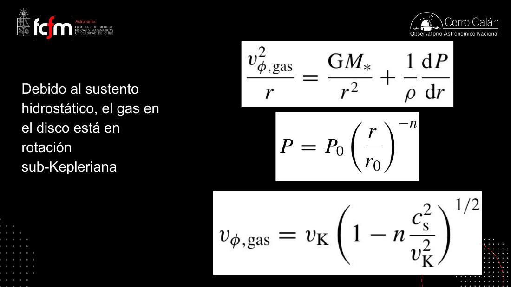
¿Cuán grande es el efecto? Según la diapositiva, para valores típicos el gas rota ~0.5% más lento que las órbitas keplerianas (en la clase se mencionó «del orden de 1%»). Parece poco, pero esa pequeña diferencia de velocidad es el motor de todo lo que sigue.
El término es el mismo que aparece en las ecuaciones de Euler/Navier-Stokes de cualquier curso de fluidos. La rotación sub-kepleriana es el análogo astrofísico del viento gradiente en meteorología: la velocidad de equilibrio de una parcela no depende solo del campo de fuerzas central, sino del gradiente de presión local. Un cambio de signo en ese gradiente invierte el sentido de la corrección — detalle que será la clave de las trampas de polvo.
La deriva radial catastrófica
Viento de cara, pérdida de momento angular, y un disco que se vacía en 100 años.
En el disco conviven el gas (sub-kepleriano) y sólidos de todos los tamaños —desde granos de un micrón hasta rocas de metros—. Los sólidos no tienen presión: se mueven balísticamente, como planetitas, a velocidad kepleriana. Resultado: desde el punto de vista de una roca, el gas que la rodea se mueve más lento. La roca siente un viento de cara permanente que la frena.
- El roce con el gas frena la roca.
- Al frenarse, la roca pierde momento angular.
- Con menos momento angular, cae a una órbita más interna… donde el proceso se repite: caída en espiral hacia la estrella.
El tamaño importa muchísimo, y de forma no monótona:
- Granos muy pequeños (micrones): están perfectamente acoplados al gas — se mueven con él, casi no sienten viento relativo, no derivan.
- Cuerpos muy grandes (asteroides, kilómetros): recogen más roce por su mayor sección, pero su masa (inercia) crece aún más rápido — el roce les es casi irrelevante: límite balístico.
- Rocas de ~1 cm a ~1 m: el peor de los mundos. No están acopladas al gas (van más rápido que él) y no son suficientemente masivas para ignorar el roce. Son las que derivan más rápido: caen sobre la estrella en ~100 años.
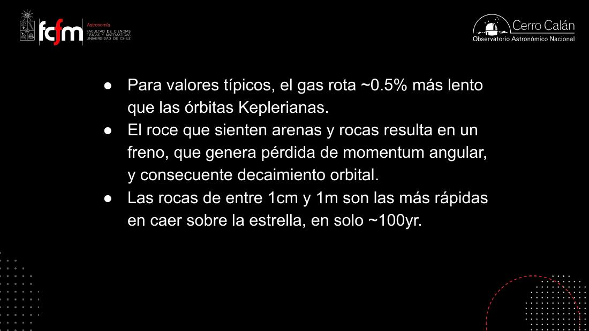
Esto fue descubierto en los años 70 por Weidenschilling en un paper clásico (en la transcripción aparece como «Biden Schilling»): es la deriva radial catastrófica. Y es catastrófica en sentido literal para la teoría: si todas las rocas de tamaño centímetro–metro caen a la estrella en un siglo, no queda material sólido intermedio para construir planetas telúricos. La formación planetaria quedaría abortada en su primer paso.
El crecimiento de polvo debe pasar sí o sí por la ventana de tamaños centímetro–metro… que es exactamente la ventana donde la deriva destruye todo en ~100 años. Se necesita un mecanismo que detenga o revierta la deriva. Ese mecanismo son las trampas de polvo (sección 3).
El acoplamiento grano-gas se cuantifica con el número de Stokes (aparece en la sección 5): la razón entre el tiempo de frenado por roce y el tiempo dinámico orbital. Es el mismo adimensional que gobierna aerosoles en un ducto o partículas en un separador ciclónico: St ≪ 1 sigue al fluido, St ≫ 1 lo ignora, y St ~ 1 es el régimen de máxima transferencia de momentum — aquí, el de la deriva máxima.
Trampas de polvo radiales: máximos de presión
Si el gradiente de presión cambia de signo, la deriva cambia de dirección.
La solución a la deriva catastrófica está escondida en la fórmula de la sección 1. La dirección de la deriva depende del signo del gradiente de presión:
- Donde (lo normal): gas sub-kepleriano → viento de cara → las rocas derivan hacia adentro.
- Donde (lado interno de un máximo local): el exponente cambia de signo, el gas rota más rápido que lo kepleriano (súper-kepleriano) → viento de cola → las rocas son aceleradas, ganan momento angular y derivan hacia afuera.
Entonces, si el perfil de presión tiene un máximo local, el polvo que está afuera del máximo deriva hacia adentro, y el que está adentro (pasado el mínimo) deriva hacia afuera: todo converge al máximo de presión. El máximo actúa como un atractor de rocas y arenas. Eso es una trampa de polvo.
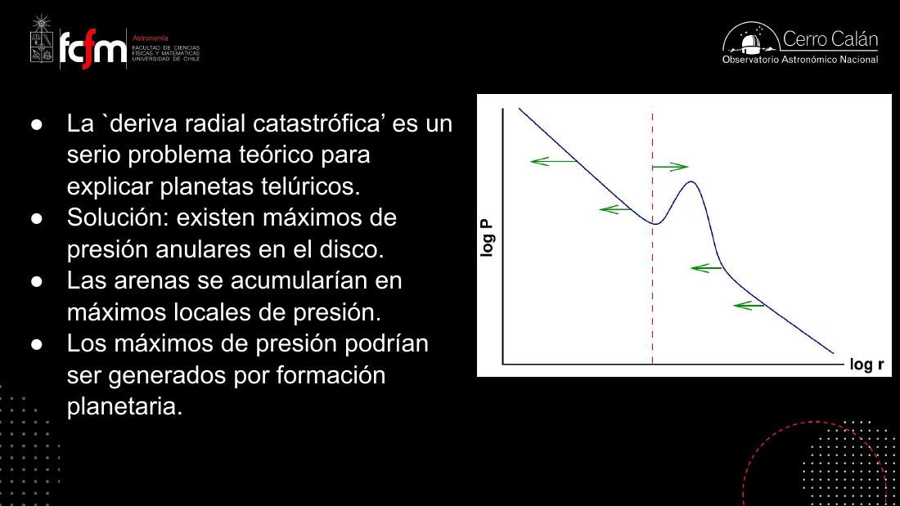
El máximo de presión es un punto fijo estable del sistema dinámico de la deriva: el campo de velocidades radiales apunta hacia él desde ambos lados. Visto de otro modo, los granos ejecutan un gradient ascent sobre P(r): cada partícula sube por el gradiente local hasta el óptimo. Y como en optimización, un máximo local basta para capturar — no hace falta que sea global.
Ejemplo 1: V4046 Sgr — anillos ultrafinos
Trabajo del grupo del profesor (Weber, Casassus et al. 2022). El sistema es una binaria cercana: dos estrellas de ~0.5 masas solares tan juntas que, dinámicamente, equivalen a una estrella de 1 masa solar — un análogo del sistema solar temprano. Las observaciones con SPHERE en el VLT (luz polarizada a 1.6 μm, que traza granos de micrones) muestran dos arcos; las de ALMA (continuo milimétrico, granos ~mm) muestran un anillo central extremadamente delgado, del orden de 1 unidad astronómica o menos.
La explicación, vía simulación hidrodinámica: dos planetas (3.7 MJúp a 9 au y 0.9 MJúp a 20 au) abren dos surcos en el gas; entre los dos surcos queda un máximo local de presión que atrapa el polvo grande y forma el anillito delgado. El polvo fino (micrones), acoplado al gas, queda más repartido — por eso el disco se ve «gordito» en infrarrojo y «delgadito» en milimétrico.
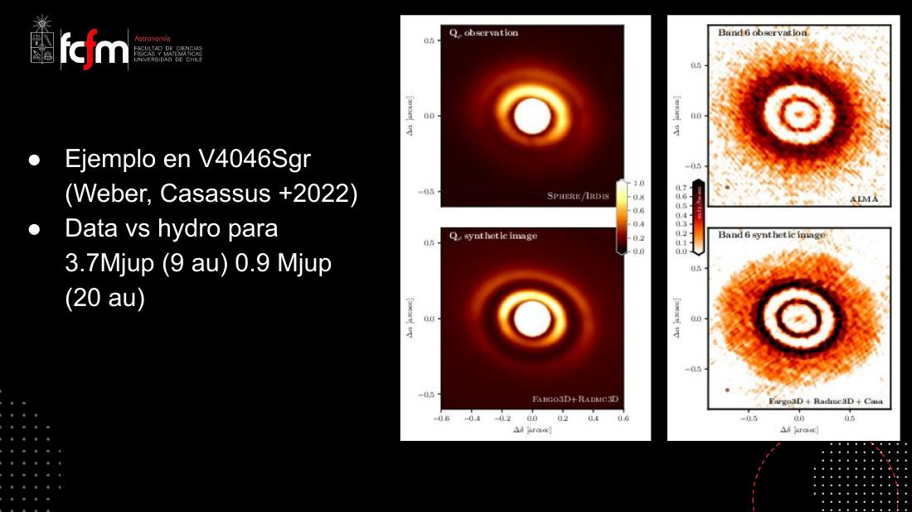
Ejemplo 2: HD 169142 — trampas por planetas pequeños
Segundo ejemplo del grupo (Pérez, Casassus et al. 2019): un anillo muy angosto explicado con un mini-Neptuno migrando hacia la estrella. La influencia gravitacional del planeta, al evacuar su surco, genera pequeñas modulaciones radiales de presión que bastan como trampas: incluso planetas chicos pueden crear trampas de polvo.
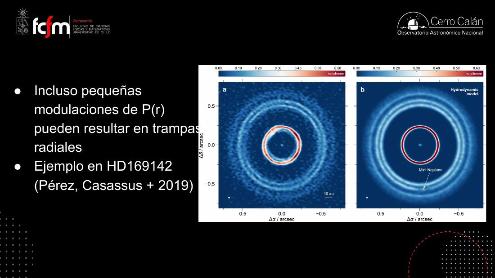
Si los máximos de presión que salvan al polvo son producidos por planetas ya formados… «es como que necesitamos un planeta para poder hacer otros: ¿el huevo o la gallina?». La clase dejó planteada esta tensión: los anillos que ALMA ve por todas partes son trampas de polvo, y al menos algunos parecen requerir planetas preexistentes.
Sedimentación vertical y crecimiento por coagulación
El polvo también cae hacia el plano medio — y crece en el camino.
Además de la concentración radial, hay un segundo mecanismo: la sedimentación. Consideremos un grano de polvo a cierta altura z sobre el plano medio del disco. La atracción gravitacional apunta hacia la estrella; su componente radial está compensada por la rotación (aceleración centrífuga), pero la componente vertical no está compensada por nada. El gas no cae porque tiene sustento de presión; el grano de polvo, sin presión, sí cae hacia el plano medio, frenado por el roce con el gas.
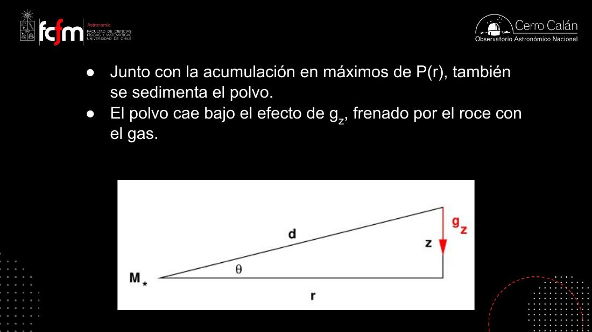
Un modelo de juguete: la columna que se barre
La clase presentó un cálculo idealizado: un grano de 1 μm parte a 5 escalas de altura del disco. En su caída vertical va barriendo un «tubito» largo y delgado; se supone que todo grano que encuentra en esa columna se le pega (coagulación perfecta). Con esa hipótesis, al llegar al plano medio el grano ha crecido de 1 μm a ~1 cm (10⁴ μm) — y al crecer cae cada vez más rápido, en un proceso que toma del orden de mil años según la figura de la diapositiva. El profesor advirtió que es una idealización optimista: en la realidad muchos choques terminan en rebote, no en adhesión; es la masa disponible, cota superior del crecimiento.
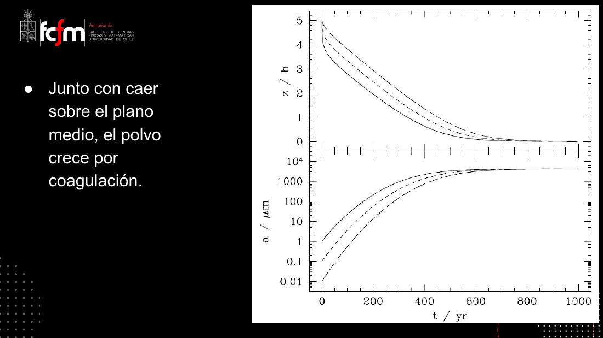
Este cuadro calza con las observaciones ya discutidas en clases anteriores: en imágenes ALMA (granos ~mm, sedimentados) los discos se ven delgados; en infrarrojo (granos ~μm, acoplados al gas) se ven gruesos. El polvo nace micrométrico en todo el volumen, pero sedimenta y crece: el plano medio se puebla de granos grandes.
Ya tenemos dos ejes de concentración: radial (trampas en máximos de presión) y vertical (sedimentación al plano medio). Ambos suben fuertemente la densidad de sólidos en regiones específicas. La pregunta siguiente: con esas densidades altas, ¿cómo se da el salto de «montón de arena» a planetesimal de kilómetros?
Inestabilidad de corriente: nacen los planetesimales
El pelotón de ciclistas que colapsa bajo su propio peso.
La teoría actual para formar planetesimales a partir de polvo concentrado se llama inestabilidad de corriente (streaming instability). Una honestidad notable de la clase: es un efecto que se observa en las simulaciones numéricas pero del cual «nadie tiene conocimiento analítico» completo — es difícil de describir en términos intuitivos.
La mejor imagen disponible: en una carrera de ciclismo, los corredores se acomodan en hileras (el pelotón) para minimizar el roce con el aire. Los filamentos de polvo del disco hacen lo mismo: para evitar el roce con el gas se van ordenando en hileras, como configuración de menor disipación. ¿Y qué pasa cuando los ciclistas van demasiado apretados? Se caen unos sobre otros. Los filamentos de polvo, demasiado densos, colapsan bajo su propia gravedad — y forman planetesimales.
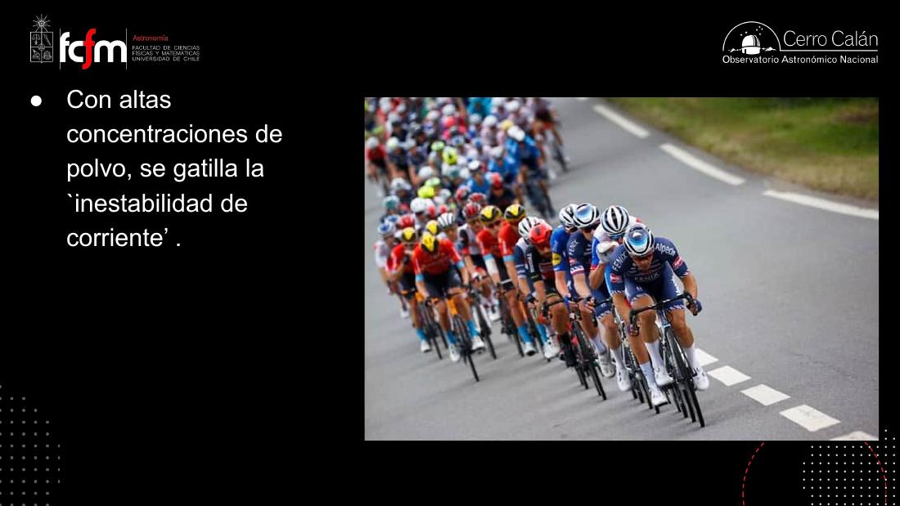
En las simulaciones (ejemplos citados: Liu & Ji 2020, Li+ 2019) se ve un pedazo de disco con intensos movimientos verticales de momentum cerca del plano medio; en una lámina delgadísima —del orden de un 1% de unidad astronómica— se arman hileras (filamentos) de polvo que luego, vistos en densidad superficial, se fragmentan en grumitos que colapsaron gravitacionalmente: planetesimales.
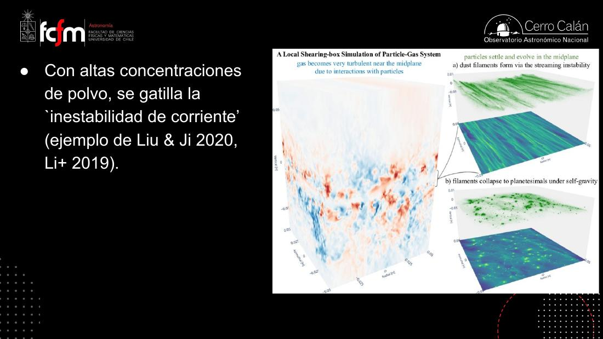
¿Cuándo se gatilla? Metalicidad y número de Stokes
El criterio se expresa en un plano de dos parámetros:
- Metalicidad Z: aquí, la razón de masa polvo/gas (la gran mayoría de los metales está en fase sólida). El valor solar de referencia es ~1%; en una trampa de polvo puede llegar a ~10% — un enriquecimiento de 10× justamente porque la trampa concentra las roquitas.
- Número de Stokes St: proporcional al tamaño del grano (en la transcripción aparece como «número de Stoops»). St ~ 0.1 corresponde a granos de ~centímetros en ese contexto.
Si (Z, St) caen sobre el umbral (Li & Youdin 2021), hay clumping y se forman planetesimales. La diapositiva compara dos anillos de un mismo disco — uno a 100 au y otro a 67 au — donde metalicidad y tamaño de grano se midieron con dos técnicas independientes: el anillo de 100 au sí cae en la zona de clumping; el de 67 au, no. Y a simple vista los dos anillos son indistinguibles: los planetesimales no son observables directamente, solo sabemos por teoría que uno debería estar formándolos.
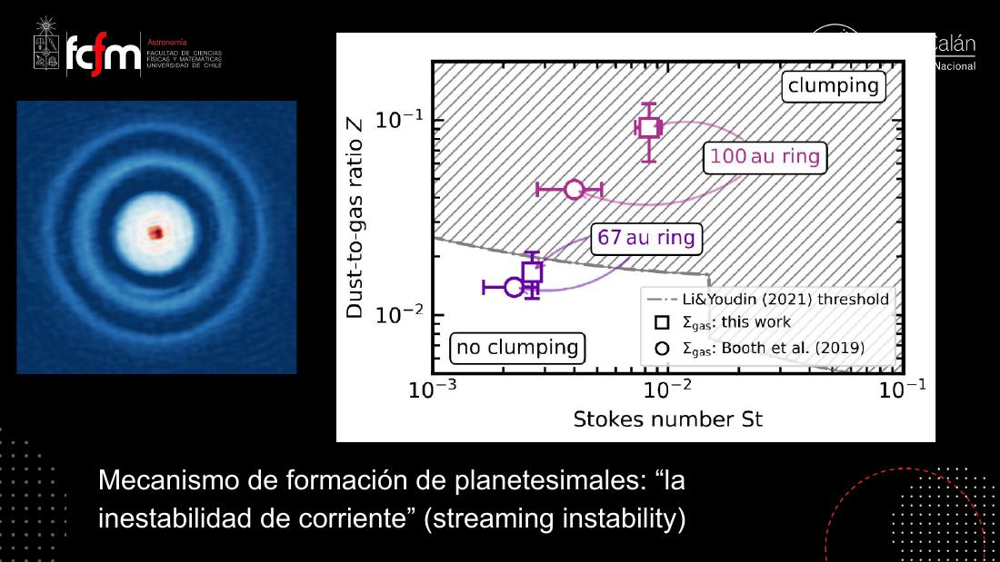
La inestabilidad de corriente es conocimiento generado por simulación: emerge de integrar numéricamente gas + partículas acopladas por roce, sin que exista (aún) una derivación analítica cerrada. Es el mismo estatus epistemológico que los comportamientos emergentes en modelos de agentes (flocking/boids): reglas locales simples —roce, gravedad— producen estructuras colectivas (filamentos) que solo aparecen al correr el sistema. Por eso el profesor insistió: aquí «teoría» = física computacional.
Trampas azimutales: vórtices anticiclónicos
El tercer eje de concentración: máximos de presión que no son anillos, sino remolinos.
Radial y vertical no agotan las formas de juntar polvo: también se puede concentrar azimutalmente (a lo largo de la órbita), con un mecanismo pariente del anterior. En un fluido en rotación, un vórtice anticiclónico es, en su centro, un máximo de presión (a diferencia del ciclónico, que es un mínimo — piense en los mapas del tiempo: la «A» de alta presión). Y ya sabemos qué hace un máximo de presión: atrapa polvo.
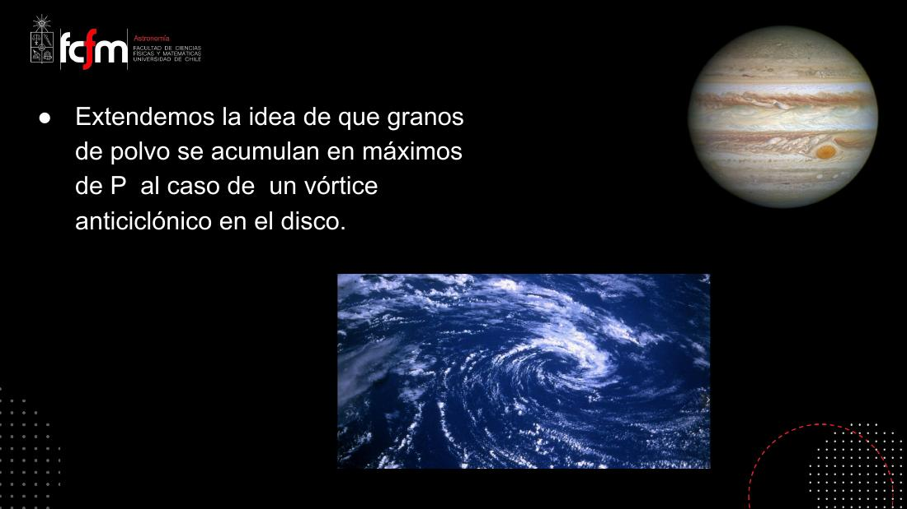
¿De dónde salen los vórtices en un disco? De cualquier discontinuidad radial brusca (por ejemplo, el borde de un surco o de una cavidad). Allí se desarrolla una inestabilidad —el profesor la comparó con la de dos fluidos de densidades distintas— que fragmenta la discontinuidad en muchos vórtices chicos que luego se fusionan en un solo vórtice gigante (simulaciones de Regály+ 2012). Nota (inferencia propia): la inestabilidad aludida, cuyo nombre quedó cortado en la transcripción, es la inestabilidad de ondas de Rossby (Rossby Wave Instability); la comparación es con la inestabilidad de Kelvin-Helmholtz / Rayleigh-Taylor.
Las simulaciones hidrodinámicas (Baruteau & Zhu 2015) predicen la acumulación de rocas en el máximo de presión del vórtice, con un sello claro: las rocas más grandes se concentran más (los granos chicos, acoplados al gas, quedan repartidos; los grandes se apilan en el centro del vórtice).
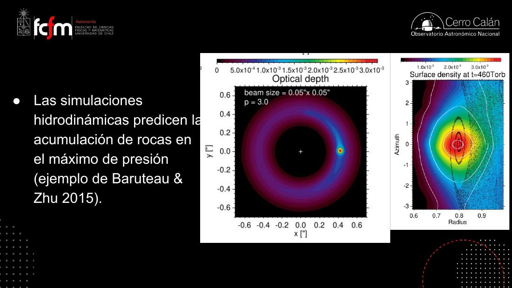
El caso MWC 758: dos vórtices y un test que funcionó
Trabajo del profesor (Casassus+ 2019): un disco con dos crecientes (arcos) en imágenes milimétricas. Al observarlo con el VLA en radio a ~1 cm —sensible al polvo centimétrico— «la estrella y el resto del disco desaparecieron»: quedó un solo grumo denso. Es exactamente la predicción de la trampa azimutal: el polvo centimétrico está más concentrado que el milimétrico. Una imagen ALMA posterior de mayor resolución mostró los dos crecientes; el sistema se modeló después con dos planetas (uno interno a la cavidad y otro externo) que generan los dos vórtices — y las predicciones para ALMA y VLA se parecen bastante a las observaciones. El vórtice más débil se interpretó como un vórtice en decaimiento, en etapa más avanzada.
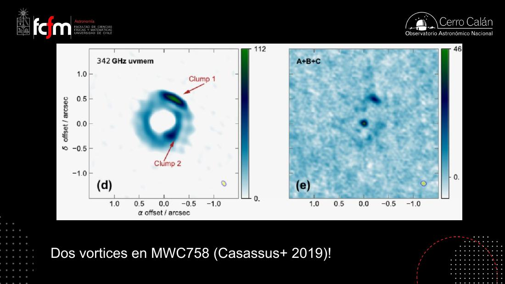
Dentro de un vórtice se suman los tres efectos de concentración: radial, vertical y azimutal. La densidad puede subir tanto que los cúmulos de rocas colapsen gravitacionalmente sin necesidad de inestabilidad de corriente (simulaciones de Lyra+ 2024 — en la transcripción, «Vladimir Laira» corresponde a Wladimir Lyra). Es una vía alternativa (o complementaria) a la streaming instability para fabricar planetesimales.
Viscosidad: el roce interno del gas
De dos placas de laboratorio a un disco que se desparrama.
Cambio de tema («más árido», advirtió el profesor, pero fundamental): para hacer hidrodinámica de discos falta un ingrediente, la viscosidad — el roce que siente el gas consigo mismo. Su definición experimental es la clásica de dos placas: una fija y una móvil que encierran un fluido. Para mantener la placa superior moviéndose a velocidad V (si no se aplica fuerza, el roce la detiene) se necesita una fuerza:
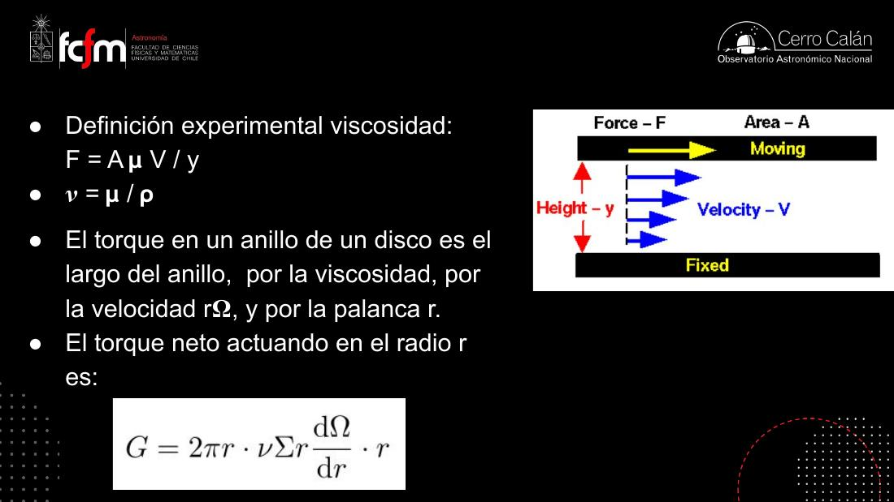
Kepler shear: anillos que se frotan
En el disco, cada anillo rota a su velocidad kepleriana, que decrece con el radio: el lado interno de un anillo va más rápido que el externo. Ese cizalle kepleriano (Kepler shear) significa que anillos adyacentes están permanentemente «frotándose»: el anillo siente roce en su cara interna (con gas más rápido) y en su cara externa (con gas más lento). La diferencia entre ambos es el torque neto, que depende de la viscosidad del disco.
La consecuencia: el disco se desparrama
¿Qué le hace esto a un continuo de anillos? Un cálculo analítico clásico (no requiere simulación): se parte con toda la masa en un anillo angosto y se deja actuar la viscosidad. Las partes frenadas caen a radios menores; las aceleradas suben a radios mayores. El anillo se desparrama en ambas direcciones:
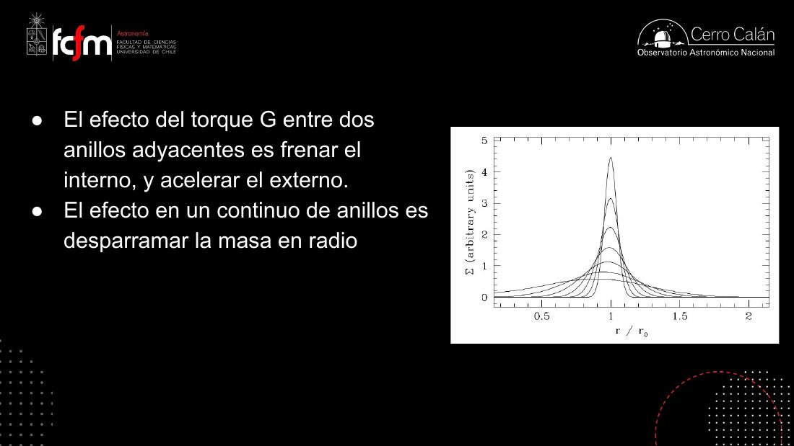
Esto responde una pregunta central de la acreción: para que el gas caiga sobre la estrella debe deshacerse de su momento angular, y la evolución viscosa lo logra exportándolo hacia afuera. También existe una solución autosimilar (ley de potencia , disco truncado con decaimiento exponencial) cuyo perfil se va desparramando a radios cada vez mayores con el tiempo. Y en estado estacionario —cuando el perfil de masa ya casi no cambia— se llega a una expresión muy simple:
La evolución viscosa de Σ(r,t) es matemáticamente una ecuación de difusión — la misma familia que la ecuación del calor. Por eso el anillo se «desparrama» exactamente como un pulso de temperatura en una barra metálica, o como un blur gaussiano aplicado iterativamente a una imagen 1D. El widget 3 de esta página integra esa difusión con un esquema explícito de diferencias finitas, con la estabilidad limitada por la condición CFL (Δt ≲ Δr²/2D) — el mismo trade-off paso temporal/resolución de cualquier solver numérico.
¿De dónde viene la viscosidad? Discos α y MRI
La viscosidad molecular no alcanza ni de lejos: hay que invocar turbulencia.
En la Tierra, la viscosidad de un gas viene de los choques entre moléculas. Dimensionalmente, el coeficiente se arma con la velocidad de agitación térmica (~velocidad del sonido, ) y el libre camino medio λ (cuánto recorre una molécula antes de chocar con otra):
Ahora el chequeo de órdenes de magnitud, al estilo ingeniería: con las densidades de un disco protoplanetario, el libre camino medio de las moléculas de H₂ es de kilómetros. Metiendo eso en τν ~ r²/ν sale una escala de evolución de ~1000 Gyr — miles de millones de años, unas cien veces la edad del universo. Pero los discos evolucionan y se disipan en ~1 millón de años. Conclusión: la viscosidad molecular es despreciable; tiene que haber otra fuente de roce.
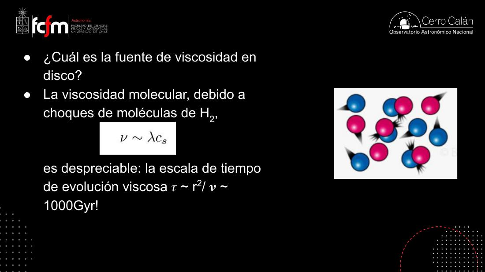
La viscosidad α: turbulencia como roce efectivo
La idea (que viene de los años 70, del estudio de discos en torno a agujeros negros — el profesor destacó lo curioso de que la física de formación planetaria y la de acreción sobre agujeros negros sean la misma): en vez de moléculas que chocan, pensar en pedazos de gas turbulento que se chocan entre sí. Se reemplaza el libre camino medio por la escala de longitud natural del disco —la escala de altura h (la de la estructura vertical gaussiana vista antes)— con una constante de proporcionalidad adimensional:
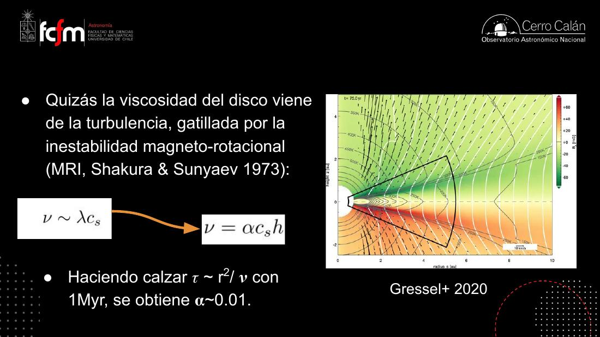
¿Y quién genera la turbulencia? La MRI
La fuente favorita (y aún pregunta abierta) es la inestabilidad magneto-rotacional (MRI). El mecanismo cualitativo que dio la clase: el disco está enhebrado por un campo magnético con componente vertical. Si una parcela de gas se corre un poco hacia adentro, estira la línea de campo, que actúa como un resorte tratando de devolverla; pero ese tirón la frena, y al frenarse pierde momento angular… y cae más. La perturbación se amplifica: inestabilidad. El resultado es turbulencia magnetohidrodinámica que provee el roce efectivo.
La diapositiva cita «MRI, Shakura & Sunyaev 1973». Para precisión bibliográfica: Shakura & Sunyaev (1973) introdujeron la prescripción α; la MRI como mecanismo concreto de turbulencia en discos fue establecida por Balbus & Hawley (1991), reflotando un resultado de Velikhov/Chandrasekhar. Ambas cosas se suelen citar juntas, como en la clase.
α es un parámetro efectivo de subgrilla: comprime toda la física turbulenta no resuelta (MRI, magnetohidrodinámica 3D) en un solo número calibrado contra un observable (τ ~ 1 Myr ⇒ α ~ 0.01). Es la misma jugada que los modelos de turbulencia en CFD (k-ε, Smagorinsky) o que un hiperparámetro ajustado por validación: no se deriva de primeros principios, se calibra — y funciona sorprendentemente bien mientras no se pida demasiado detalle.
El disco se calienta por roce: la línea de nieve que se mueve
Disipación viscosa vs. irradiación estelar — y un huevo frito en Orión.
El roce viscoso no solo transporta momento angular: disipa energía. Parte del disco pierde energía gravitacional al caer, y esa energía calienta el gas. El perfil radial de temperatura que resulta del calentamiento viscoso es:
Como r−3/4 cae más rápido que r−1/2, las dos curvas se cruzan: cerca de la estrella domina el calentamiento viscoso; lejos, el radiativo (el disco simplemente calentado por la luz de la estrella).
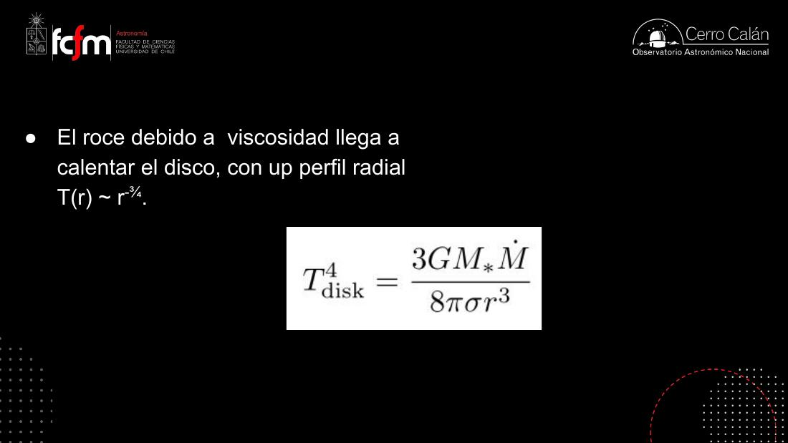
V883 Ori: el huevo frito que confirmó el efecto
¿Se puede observar ese calentamiento? Sí. En V883 Ori, una protoestrella creciendo por acreción, la línea de nieve del agua (el radio donde el agua pasa de vapor a hielo) estaría normalmente a ~5 au — cerca de la órbita de Júpiter. Pero si la estrella sufre un brote de acreción (accretion burst: Ṁ se dispara), el disco se abrillanta y el calentamiento viscoso empuja la línea de nieve hasta 50–100 au: un corrimiento de un orden de magnitud, observable.
Eso es lo que el grupo vio con ALMA: el disco tiene aspecto de huevo frito, y la «yema» brillante interior está a temperaturas sobre la de sublimación del agua — las regiones internas tienen sus hielos vaporizados por el brote de acreción. Fue un paper en Nature en 2016 (Cieza, Casassus et al.), del que el profesor se declaró muy contento.
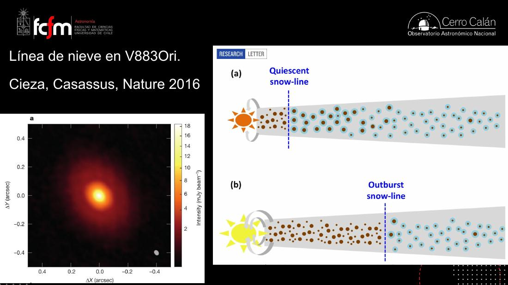
La línea de nieve separa la zona donde los sólidos son solo roca (adentro) de la zona donde además hay hielos (afuera), duplicando o más la masa sólida disponible. Su posición —y el hecho de que pueda moverse con la historia de acreción— condiciona qué se puede formar y dónde. La conexión con el calentamiento viscoso convierte un resultado abstracto (T ∝ r−3/4) en un observable concreto.
Migración tipo I y trampas de planetas
Las espirales que un planeta levanta en el disco… lo frenan a él mismo.
Último bloque: ¿qué le hace el disco a un planeta ya formado? Una simulación con una súper-Tierra de ~10 masas terrestres dentro de un disco muestra de inmediato la formación de espirales: desde el punto de vista del planeta, las órbitas internas (más rápidas) se le acercan por un lado y las externas (más lentas) se alejan por el otro, y la perturbación gravitacional del planeta se propaga como dos brazos espirales — uno interno y uno externo — que recorren todo el disco. (No hay expresión analítica cerrada para estas espirales; se ven en el cálculo numérico. El porqué de su forma quedó para la clase siguiente.)
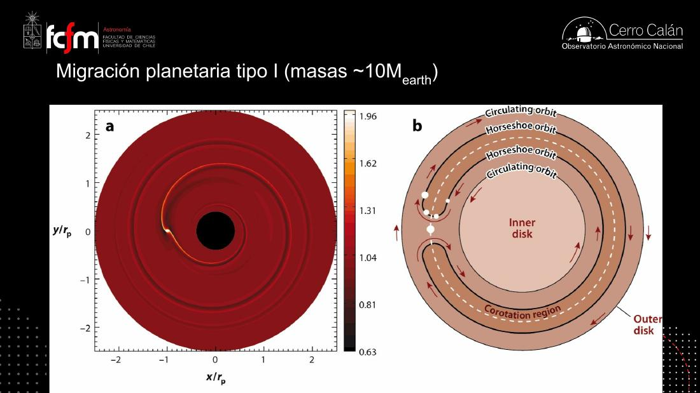
El argumento del torque: por qué el planeta cae
Partamos de un disco perfectamente homogéneo: por simetría, la fuerza neta del disco sobre el planeta es cero. Pero el planeta rompe esa simetría creando las dos sobredensidades espirales. Ahora sumemos la gravedad de cada espiral sobre el planeta:
- Si la densidad superficial de masa decae con el radio — con q > 0, por ejemplo q = 1 — la espiral externa resulta más masiva que la interna.
- La espiral externa está a radio mayor: rota más lento que el planeta.
- Más masiva + más lenta ⇒ su tirón gravitacional neto frena al planeta.
- Un planeta frenado pierde momento angular ⇒ migra hacia adentro, hacia la estrella. Eso es la migración tipo I.
Y el reverso: si localmente aumenta con R, gana la espiral interna (que rota más rápido), acelera al planeta, y este migra hacia afuera.
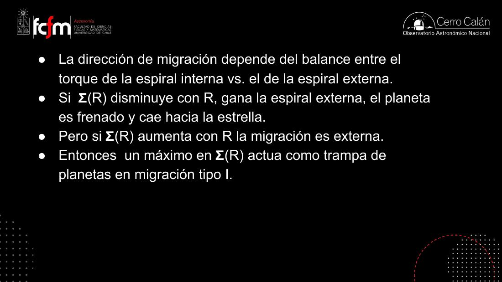
Mismo patrón que en la sección 3, un nivel más arriba: alrededor de un máximo de Σ(R), el planeta que está afuera migra hacia adentro y el que está adentro migra hacia afuera — los máximos de densidad superficial son trampas de planetas, además de trampas de polvo (la presión sigue a la densidad de masa). El disco tiene atractores para sus dos poblaciones: granos y planetas.
Surcos, migración tipo II y el Grand Tack
Júpiter migró hacia el Sol, rebotó, y de paso armó el sistema solar interior.
Cómo un gigante abre su surco
Cuando la masa del planeta supera aproximadamente 1 masa de Júpiter, sus torques le ganan a la viscosidad y el planeta excava un surco (gap) en el gas. El mecanismo no es «apartar material como una lancha»: es gravitacional, y es el mismo argumento de los torques al revés:
- El material interior a la órbita va más rápido que el planeta; la gravedad del planeta lo frena → pierde momento angular → cae hacia adentro, alejándose de la órbita.
- El material exterior va más lento; el planeta lo acelera → gana momento angular → es lanzado a radios mayores.
- Mientras tanto, la viscosidad del disco intenta desparramar el gas y rellenar el hueco. El ancho del surco queda fijado por el equilibrio entre torque planetario y viscosidad. (La diapositiva agrega el criterio de masa mínima: que la esfera de influencia gravitacional del planeta sea comparable al espesor del disco.)
Un gigante con surco sigue migrando —es la migración tipo II— y, según lo dicho en clase, esta migración es más rápida que la tipo I: «Júpiter cae más rápido sobre la estrella que una Tierra». Nota de cautela (material externo): en gran parte de la literatura la migración tipo II se describe como acoplada al tiempo viscoso y no necesariamente más rápida que la tipo I; lo robusto para esta clase es que los gigantes con surco migran rápido — en el escenario del Grand Tack, Júpiter migra en ~100.000 años.
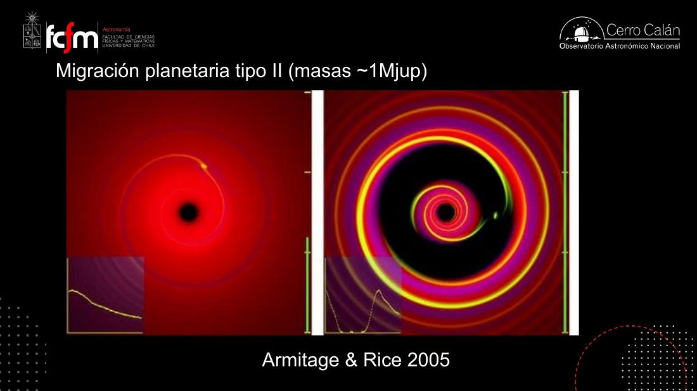
El Grand Tack: el rebote que salvó a Júpiter (y nos salvó a nosotros)
La hipótesis del Grand Tack (en la transcripción: «gran TAC», «decanta») arma la película completa:
- Lo primero que se forma en el sistema solar son los gigantes: Júpiter y Saturno.
- Ambos migran hacia el Sol, rápido: ~100.000 años.
- Cada uno lleva su propio surco. Al acercarse entre sí, el surco de Saturno se superpone con el de Júpiter.
- Con los surcos superpuestos cambia el perfil de Σ(R) alrededor de Júpiter — y con él, el balance de torques: Júpiter deja de migrar hacia adentro y se devuelve. Se salvó de caer sobre el Sol.
- Ese cambio de rumbo es el tack — término de navegación a vela: virar contra el viento.
Las consecuencias para la arquitectura del sistema solar interior: al migrar hacia adentro y devolverse, los gigantes arrastraron y concentraron los sólidos de la región interna — el material que formó los planetas rocosos — y al devolverse empujaron a los gigantes de hielo hacia afuera. Es una de las piezas importantes para explicar la arquitectura del sistema solar, incluyendo por qué la región interior quedó tan compacta y con poca masa.
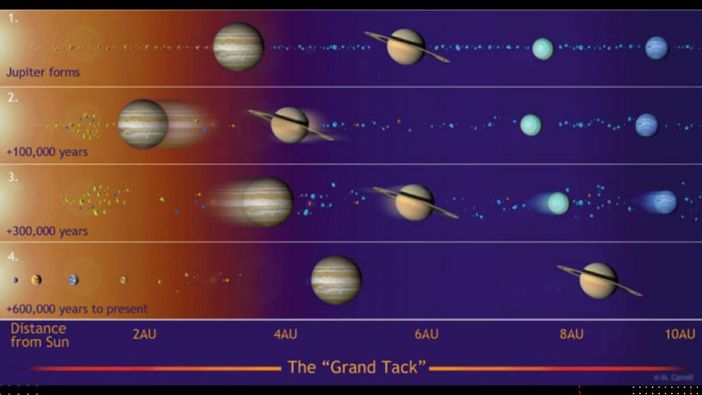
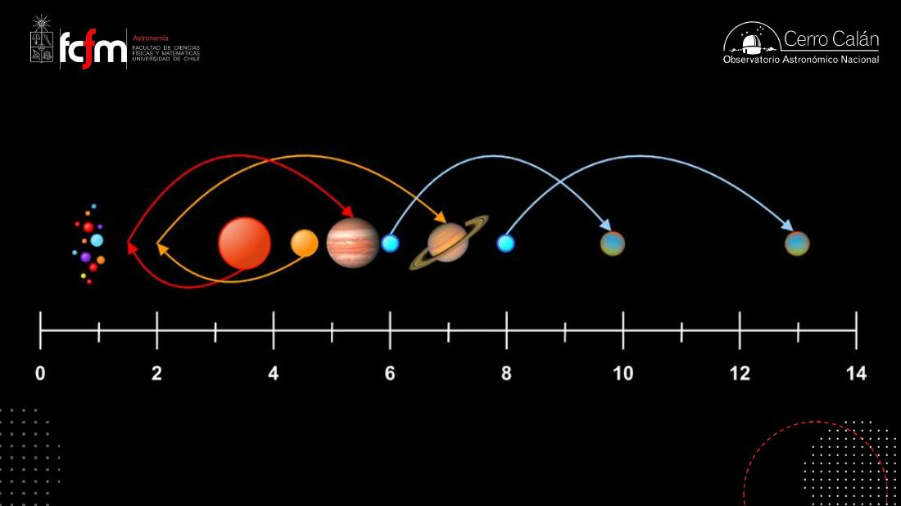
El tack es un cambio de signo en la «función objetivo» del sistema: la dirección de migración es el signo de un torque neto que depende del estado global (el perfil Σ(R), que los propios planetas modifican al superponer surcos). Es un sistema con retroalimentación entre agentes y ambiente: los planetas alteran el disco, el disco decide hacia dónde migran los planetas. Predecir el resultado exige simulación acoplada — otro ejemplo de por qué esta «teoría» es física computacional.
Quedó pendiente el porqué de la forma espiral de las ondas que levanta un planeta («vamos a ver un ratito el próximo viernes por qué estos planetas generan ondas espirales»). El Grand Tack quedó presentado hasta el rebote; el módulo sigue con más dinámica de discos.
Explorar conceptos
Tres widgets para jugar con las ideas de la clase.
Conceptos clave
Tabla de repaso rápido.
| Concepto | Qué es / valor | Por qué importa |
|---|---|---|
| Rotación sub-kepleriana | El gas rota ~0.5% más lento que vK por su sustento de presión | Origina el viento de cara que frena a los sólidos |
| Deriva radial catastrófica | Rocas de 1 cm–1 m caen a la estrella en ~100 años (Weidenschilling, años 70) | Problema grave: sin solución, no hay material para planetas telúricos |
| Trampa de polvo radial | Máximo local de P(r): la deriva converge hacia él desde ambos lados | Solución a la deriva; los anillos de ALMA son trampas de polvo |
| Sedimentación | gz no compensada: el polvo cae al plano medio y crece (1 μm → ~1 cm) | Concentración vertical; explica discos delgados en mm y gruesos en IR |
| Inestabilidad de corriente | Filamentos de polvo (como pelotón de ciclistas) que colapsan por autogravedad | Mecanismo estándar de formación de planetesimales; solo se conoce por simulaciones |
| Criterio de clumping | Plano metalicidad Z vs. número de Stokes; Z☉ ~ 1%, en trampas ~10% | Decide qué anillos pueden formar planetesimales (100 au sí, 67 au no) |
| Vórtice anticiclónico | Máximo de presión azimutal; nace de discontinuidades radiales | Trampa azimutal; las rocas grandes se concentran más (MWC 758 con VLA) |
| Viscosidad | F = AμV/y; ν = μ/ρ; torque por Kepler shear entre anillos | Frena el anillo interno, acelera el externo: exporta momento angular |
| Evolución viscosa | El disco se desparrama (difusión); estacionario: νΣ ∝ Ṁ | Explica cómo el gas pierde momento angular y acreta sobre la estrella |
| Disco α | ν = αcsh con α ~ 0.01 (Shakura & Sunyaev 1973) | La viscosidad molecular daría τ ~ 1000 Gyr; la turbulencia (MRI) la reemplaza |
| Calentamiento viscoso | T ∝ r−3/4 (vs. r−1/2 radiativo); domina a radios chicos | Brotes de acreción corren la línea de nieve: V883 Ori, de ~5 a 50–100 au |
| Migración tipo I | ~10 M⊕: la espiral externa (más masiva si Σ decae) frena al planeta | El planeta cae hacia la estrella; máximos de Σ(R) son trampas de planetas |
| Migración tipo II | ≥ ~1 MJúp: el planeta abre surco (torque vs. viscosidad) y migra con él | Los gigantes migran rápido (~100.000 años en el Grand Tack) |
| Grand Tack | Júpiter y Saturno migran hacia adentro; los surcos se superponen y Júpiter rebota | Explica la arquitectura del sistema solar interior y concentró los sólidos de los rocosos |
Exámenes de práctica
10 exámenes de 5 preguntas (3 de alternativas autocorregibles + 2 de respuesta escrita).
- Examen 01Rotación sub-kepleriana
- Examen 02Deriva catastrófica
- Examen 03Trampas de polvo radiales
- Examen 04Sedimentación y crecimiento
- Examen 05Inestabilidad de corriente
- Examen 06Vórtices anticiclónicos
- Examen 07Viscosidad y torques
- Examen 08Discos α y MRI
- Examen 09Calentamiento y línea de nieve
- Examen 10Migración y Grand Tack